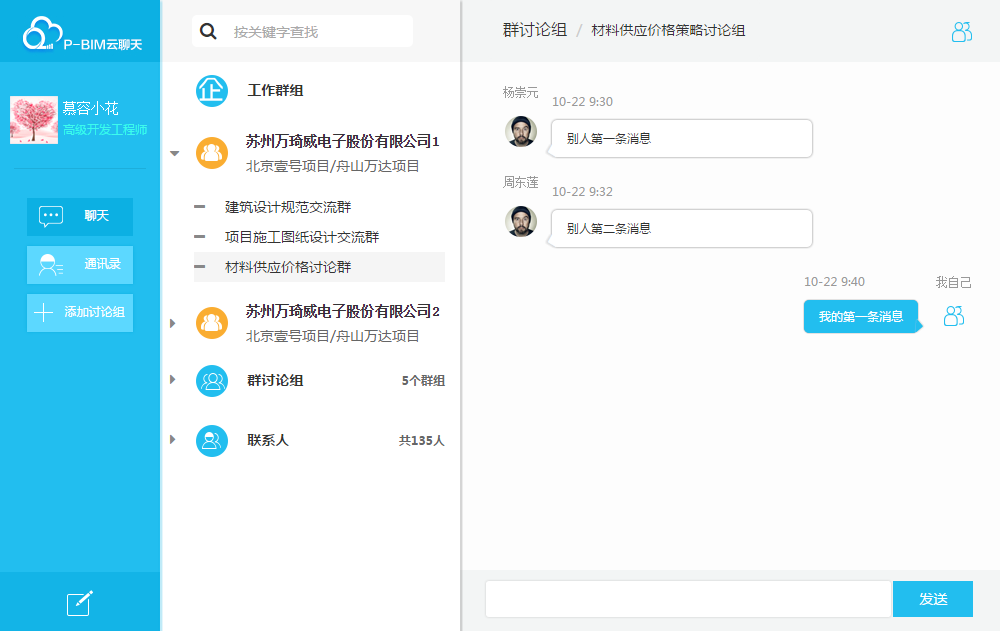

-
- Experience. 项目与工作经验
苏州万琦威电子股份有限公司（2016.2 - 至今）
-
P-BIM数字交换平台
参与 P-BIM 数字管理平台的设计，完成了首页、登录注册页、个人信息、开发者中心、聊天器等多个模块的制作
解决浏览器兼容性问题（IE8+）及遗留bug
项目使用 Bootstrap 框架进行前端布局、Knockout 进行数据交互
日立北工大信息系统有限公司（2015.5 - 2016.2）
-
“智寻”——人脸识别
前期参与图像搜索算法的研究，后期自学web前端开发，协助前端工作人员开发图像搜索网站
使用HTML/CSS/Javascript制作网站前端
个人项目
-
PBIM-chat 源代码
一个即时通讯服务的聊天器，可建立企业群、讨论组来管理成员，可实时推送消息，可添加、删除好友
该项目使用knockout进行数据绑定，bootstrap框架进行布局，flask做应用框架
 -
Uplaod-Img 源代码 Demo
一个模仿QQ上传头像的插件，基于jquery.Jcrop.js完成. 能自适应图片大小，可以上传、截取、预览、保存图像，可以自定义保存图像的大小
-
微型js库 源代码
实现了一个微型JS库，其中包括对原生 JavaScript 数据类型及语言基础、DOM、事件、BOM、Ajax等的操作和封装，并运用这个JS库实现了表单输入交互、倒计时工具、轮播图、输入提示框、界面拖拽交互
-
ShoppingMall-首页 源代码 Demo
条理清晰、内容完善的生活服务网站首页，实现了基本的动画和交互，使用jQuery框架，兼容IE6+
-
- Skill.技能清单
Web前端
-
HTML/CSS
能够编写语义化的 HTML，模块化的 CSS，完成较复杂的布局
熟悉 Less / Sass / 等CSS预处理方法
-
JavaScript
熟悉原生Javascript，能脱离jQuery等类库编码
熟悉jQuery的使用,了解AngularJS、RequireJS 的使用
能运用模块化、面向对象的方式编程
-
其它
掌握基本的前端兼容性处理、性能优化知识与技巧，并能在项目中加以实践
能够使用 Photoshop 完成简单的设计
后端
-
了解 Python Flask框架，能完成简单的数据交互
了解 C和C++，有一定的编程基础
-
- Basic Info.基本信息
-
个人信息
刘欣 / 女 / 汉 / 河南省平顶山市
-
教育经历
2012-2015 / 北京工业大学 / 信息与通信工程 / 研究生
2008-2012 / 中原工学院 / 通信工程 / 本科
-
英语水平
通过CET-6，听说译写能力扎实
能够阅读、翻译英文专业文档及其他资料，能在Stack Overflow正常交流
-
获得奖励
2015年北京市优秀毕业生
刘 欣
-
- Application. 应聘岗位
- WEB前端工程师
-
- Contact. 联系方式
- 邮箱: liuxin200867@163.com
- 电话: 15652355469
-
- Tech. 技能点
HTMLJavaScriptCSSBootstrapKnockoutPython -
- Self-evaluation. 自我评价
- 热衷于前端开发，凭着对前端技术的满腔热情，毅然转投前端领域
- 性格稳重，对工作有高度的责任心，对知识有较强的求知欲
- 第一篇文章
- 第二篇文章